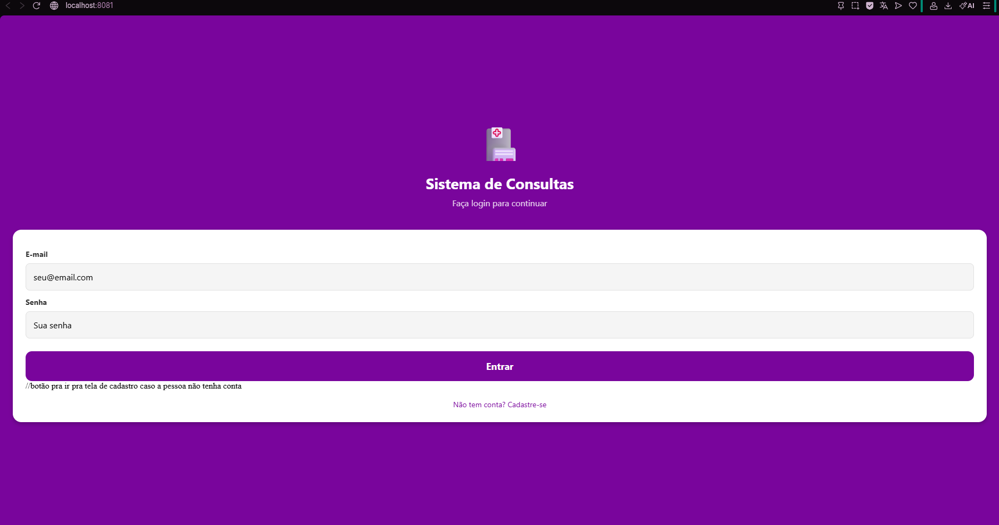
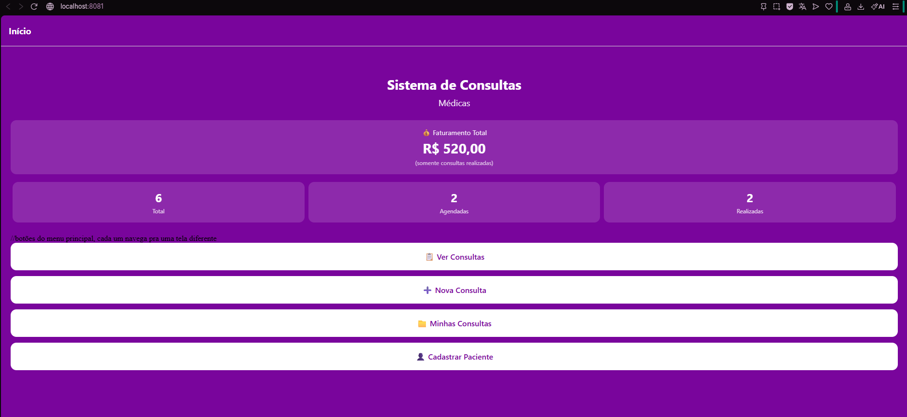
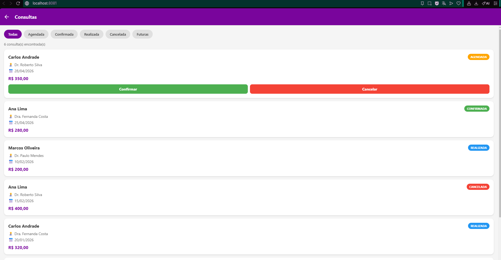
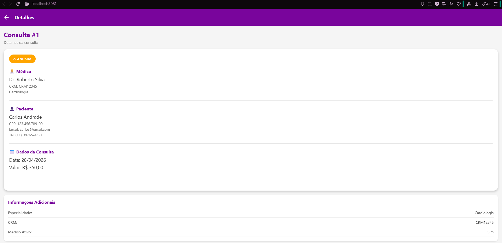
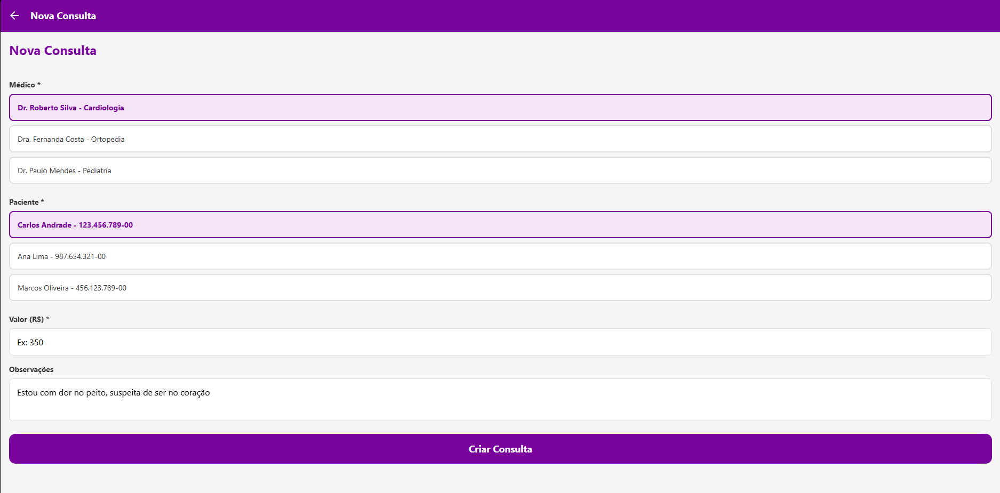

Aluno: Gustavo Gomes Martins
RM: 555999
Tipo: Trabalho Individual
Tecnologias: React Native + Expo + TypeScript
Repositório: github.com/gugomesx10/sistema-consultas-mobile
Branch principal: rm555999
Refatorar a organização dos estilos do projeto, separando os StyleSheet.create que estavam dentro de cada tela para arquivos dedicados na pasta src/styles/, mantendo a aplicação 100% funcional.
Trabalhei individualmente, criando uma branch para cada tela conforme solicitado. Todas as branches foram criadas a partir da rm555999, e depois mergeadas de volta com --no-ff.
| # | Tela refatorada | Branch | Commit | Status |
|---|---|---|---|---|
| 1 | HomeScreen | feat/styles-home | b30e962 |
✅ Merged |
| 2 | ConsultasListScreen | feat/styles-consultas-list | b96dca8 |
✅ Merged |
| 3 | ConsultaDetalhesScreen | feat/styles-consulta-detalhes | 1e20fa8 |
✅ Merged |
| 4 | NovaConsultaScreen | feat/styles-nova-consulta | cc99c8f |
✅ Merged |
| 5 | Login | feat/styles-login | af1e94c |
✅ Merged |
| 6 | CadastroPaciente | feat/styles-cadastro | f2dd558 |
✅ Merged |
| 7 | MinhasConsultas | feat/styles-minhas-consultas | 5b7f4b6 |
✅ Merged |
git checkout rm555999 && git pull — atualizar a branch principalgit checkout -b feat/styles-<nome> — criar a branch da telasrc/styles/<nome>.styles.ts com o StyleSheet extraídoimport styles from "../styles/<nome>.styles"npx expo start) para garantir que nada quebrougit add . && git commit -m "refactor: extrair styles..."git push origin feat/styles-<nome>git checkout rm555999 && git merge --no-ff feat/styles-<nome> — merge de voltaMostrando o antes e depois da refatoração da tela HomeScreen como exemplo do padrão aplicado nas 7 telas.
1. HomeScreen.tsx (apenas componente)
2. home.styles.ts (apenas estilos)
| Tela | Arquivo de styles criado | Import na tela |
|---|---|---|
| HomeScreen.tsx | home.styles.ts | import styles from "../styles/home.styles" |
| ConsultasListScreen.tsx | consultasList.styles.ts | import styles from "../styles/consultasList.styles" |
| ConsultaDetalhesScreen.tsx | consultaDetalhes.styles.ts | import styles from "../styles/consultaDetalhes.styles" |
| NovaConsultaScreen.tsx | novaConsulta.styles.ts | import styles from "../styles/novaConsulta.styles" |
| Login.tsx | login.styles.ts | import styles from "../styles/login.styles" |
| CadastroPaciente.tsx | cadastroPaciente.styles.ts | import styles from "../styles/cadastroPaciente.styles" |
| MinhasConsultas.tsx | minhasConsultas.styles.ts | import styles from "../styles/minhasConsultas.styles" |
Prints tirados do app rodando no navegador via localhost:8081 (Expo Web).
Tela de Login

Tela Home (Menu Principal)

Lista de Consultas (com filtros)

Detalhes da Consulta

Nova Consulta (Agendamento)

O projeto usa tipagem forte com TypeScript. Separei type para estruturas simples e interface para objetos mais complexos com relacionamentos.
Representa a especialidade médica (cardiologia, ortopedia, etc.)
Dados do paciente cadastrado no sistema
Define os únicos 4 status possíveis para uma consulta — se colocar outro valor, o TypeScript dá erro.
Interface do médico — usa o type Especialidade como referência
Interface principal — junta Medico, Paciente, StatusConsulta
type → para estruturas simples, union types e alias de tiposinterface → para objetos que têm relacionamentos com outros tipos (Medico referencia Especialidade, Consulta referencia Medico e Paciente)src/types/, Interfaces ficam em src/interfaces/
| Item | Status |
|---|---|
7 arquivos criados em src/styles/<nome>.styles.ts | ✅ Feito |
| StyleSheet removido de todas as 7 telas | ✅ Feito |
Import correto com ../styles/<nome>.styles | ✅ Feito |
export default styles em todos os arquivos de styles | ✅ Feito |
| Item | Status |
|---|---|
| App compila sem erros TypeScript | ✅ OK |
| App roda sem crashes | ✅ OK |
| Todas as telas aparecem corretamente | ✅ OK |
| Navegação funciona entre todas as telas | ✅ OK |
| Item | Status |
|---|---|
7 branches criadas com prefixo feat/styles- | ✅ Feito |
Todas mergeadas na rm555999 com --no-ff | ✅ Feito |
| Commits com mensagens descritivas | ✅ Feito |
| Push de todas as branches no GitHub | ✅ Feito |
| Campo | Informação |
|---|---|
| Nome | Gustavo Gomes Martins |
| RM | 555999 |
| Telas refatoradas | Todas as 7 (trabalho individual) |
../styles/ em vez de ./styles/).Alert.alert do React Native não funciona na web (navegador), tive que adaptar pra usar window.alert quando rodava no browser.export default styles nos arquivos de styles, senão o import quebrava.--no-ff para manter o histórico organizado.https://github.com/gugomesx10/sistema-consultas-mobile